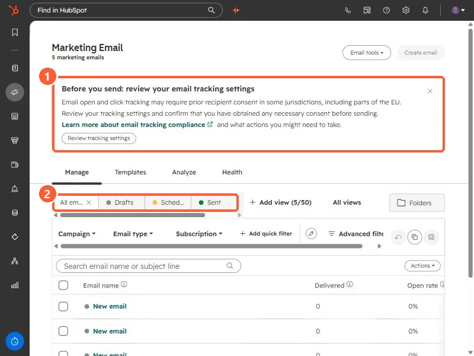
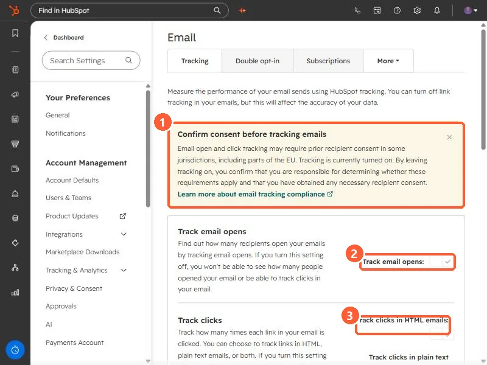

Short answer
Open and click tracking may require the recipient's prior consent in some places, including parts of the EU. HubSpot says that by leaving tracking on you confirm you are responsible for deciding whether those requirements apply to you and that you have the consent you need. The settings are under Settings, Marketing, Email, Tracking. You can turn off Track email opens and track-clicks account-wide, or turn tracking off for a single email in its editor. This is not legal advice. Check with whoever advises you.
1. Where the banner appears
Open Marketing email. A banner above the list says: before you send, review your email tracking settings. It explains that open and click tracking may require prior recipient consent in some jurisdictions, including parts of the EU, and links to HubSpot's compliance article. Below it are the Manage, Templates, Analyze, and Health tabs, and status tabs such as Drafts, Scheduled, and Sent.


2. The tracking settings
Click Review tracking settings. It opens the Tracking tab in email settings. A yellow note repeats the warning and says tracking is currently turned on, and that by leaving it on you are confirming you are responsible for deciding whether consent requirements apply and for having obtained any consent needed.


- Track email opens. If you turn it off, you will not be able to see how many people opened your email or track clicks in your email, according to the setting's own text.
- Track clicks. You can choose to track links in HTML emails, plain text emails, or both.
3. Other ways to limit tracking
- One email only. In the email editor you can turn off open and click tracking for a single email while keeping it on for the account.
- One-to-one email. Set separately, under Objects, Activities, with the checkbox that allows users to track emails.
- EU accounts. HubSpot says data privacy settings are on by default, and tracking is not added for contacts with no legal basis for processing recorded.
Open and click rates, and anything built on them, stop being accurate. See the never-opened email stat for one place that matters.